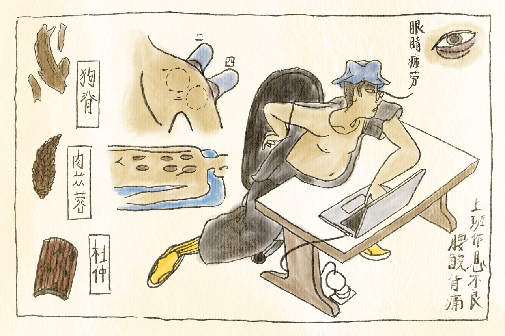

<!DOCTYPE html>
<html>
<head>
    <meta charset="utf-8" />
    <meta http-equiv="X-UA-Compatible" content="IE=edge" />
    <title>Why Should You Hire Chun?</title>
    <meta name="description" content="Lam Yik Chun's Art Direction And Illustration Portfolio" />
    <meta name="viewport" content="width=device-width, initial-scale=1" />
    <link rel="stylesheet" href="style.css" />
    <link rel="preconnect" href="https://fonts.googleapis.com">
    <link rel="preconnect" href="https://fonts.gstatic.com" crossorigin>
    <link href="https://fonts.googleapis.com/css2?&family=Shrikhand&family=Newsreader:ital,opsz,wght@0,6..72,200..800;1,6..72,200..800&family=Savate:ital,wght@0,200..900;1,200..900&display=swap" rel="stylesheet"> 
    <style>
    /*
      #scrolly {
        position: relative;
        background-color: #f3f3f3;
        padding: 1rem;
      }

      article {
        position: relative;
        padding: 0;
        max-width: 20rem;
        margin: 0 auto;
      }

      .sticky-thing {
        position: -webkit-sticky;
        position: sticky;
        left: 0;
        width: 100%;
        margin: 0;
        background-color: #8a8a8a;
        z-index: 0;
        top: 12.5vh;
        height: 75vh;
        /* Center everything inside
        display: flex;
        align-items: center;
        justify-content: center;
      }

      .sticky-thing p {
        font-size: 2.5rem;
        font-weight: 400;
        color: #fff;
      }

      .step {
        margin: 0 auto 2rem auto;
        color: #fff;
        background-color: rgba(0, 0, 0, 0.1);
      }

      .step:last-child {
        margin-bottom: 0;
      }

      .step.is-active p {
        background-color: goldenrod;
        color: #3b3b3b;
      }

      .step p {
        text-align: center;
        padding: 1rem;
        font-size: 1.5rem;
        background-color: #3b3b3b;>
      }
        */
    </style>
  </head>
</html>
<body>
  <header>
    <div class="section">
      <p class="title">Why You Should Hire Chun</p>
      <p class="intro__dek">A short catalog of my 9-year career so far—highs, lows, awards, and anecdotes.</p>
    </div>
  </header>
  <main>
    <div class="section">
      <p class="subhead">I Built A Content Team</p>
      
      <div class="article">
        <p>
        <span class="drop-cap">F</span>rom 2021–2024, I created, pitched, and directed the content behind <a target="_blank" rel="noopener noreferrer" href="https://instagram.com/ribbit.fyi">Ribbit.FYI</a>, a content series built on engaging, un-boring, data storytelling about the intricacies of our world, and how we survive and thrive in it. 
        </p>
        <p>
        Like the proverbial frog in the well, we believed that with our content, everyone could broaden their worldview, one data story at a time. We didn't believe that we could quadruple our follower count in a year, but we did.
        </p>
        <p>
        There are stories about 
        <a target="_blank" rel="noopener noreferrer" href="https://www.instagram.com/p/DE7GRvLSSdA/">late night yaps</a>
        ,
        <a target="_blank" rel="noopener noreferrer" href="https://www.instagram.com/p/CiPhDpJhgEu/">loss</a>
        , and a 
        <a target="_blank" rel="noopener noreferrer" href="https://www.instagram.com/p/C0RFKKcPoAt/">cost-benefit-analysis of buying house brands at the supermarket.</a>
        </p>
        <p>
        We even (somewhat) managed to convince the <i>gahmen</i> to let us talk about 
        <a target="_blank" rel="noopener noreferrer" href="https://www.instagram.com/p/C-r_GB7S2tr/">the real reason why people aren't having kids.</a>
        </p> 
        <p>
        Ribbit's claim to fame (besides trawling through 
        <a target="_blank" rel="noopener noreferrer" href="https://www.instagram.com/p/CwhnPhoJ0zK/">1000 ghost stories</a> and presenting our findings at an open mic) is winning at the WAN-IFRA Digital Media Asia Awards for a story about <a target="_blank" rel="noopener noreferrer"href="https://www.instagram.com/ribbit.fyi/p/C4xebEJx4xQ/">Singapore's lack of late-night transport.</a>
        </p>
        </div>
      </div>
    <div class="section">
      <p class="subhead">I've Been In The Agency Trenches</p>
      
    <div class="article">
      <p>
        <span class="drop-cap">T</span>he knowledge of how to structure, direct, and plan content and resources for Ribbit would not have been possible without my prior agency  experience.
      </p>
      <p>
        From 2017 to 2020, I worked on the Walt Disney Company social team at Digitas, creating content for the brand pages of Singapore, Malaysia, The Philippines, Indonesia, Thailand, and Vietnam.
      </p>
      <p>
        Some of my career highlights include being an arm’s length away from Robert Downey Jr and Samuel L. Jackson…
      </p>
      <p>
        As well as (almost) <a target="_blank" rel="noopener noreferrer" href="https://shortyawards.com/11th/disney-ralph-breaks-the-internet">winning an award</a> for our viral post promoting Wreck-It Ralph 2.
      </p>
      <p>
        I also designed a CRM interface for Prudential, a formative experience as a Junior Art Director who had no clue what a CRM was and what it stood for.
      </p>
      <p>
        During the pandemic, I decided it was a good idea to leave my stable job of 3+ years, and seek pastures anew in a more traditional art director role. (what can I say? I like challenges.)
      </p>
      <p>
        With WPP@Unilever, I jumped (or got jumped) into the world of FMCG marketing, designing and pitching content directly to the clients for Vaseline’s social accounts, while art directing TVCs for 
      
        <a target="_blank" rel="noopener noreferrer" href="https://www.youtube.com/watch?v=2IU__USDCLQ">Ponds</a> 
      
        and Comfort, as well as print ads for Vaseline.
      </p>
    </div>
  </div>
  <div class="section">
      <p class="subhead">I Can Illustrate Pretty Well</p>
      
    <div class="article">
      <p>
        <span class="drop-cap">M</span>y love of everything illustrated has formed the backbone of my creative experience. It helps me communicate concepts and ideas to the team, and to clients. For the first year of Ribbit.FYI, I designed and drew everything.
      </p>
      <p>
        To this day, it’s faster for me to scribble on a notepad and show exactly what I want something to look like, rather than killing trees with genAI, or thumbing through a hundred pages of iStock. I've also done freelance illustration work for Rice Media, Shopback, and HSBC.
      </p>
      <p>
        And yes,
        <a target="_blank" rel="noopener noreferrer" href="https://www.instagram.com/p/DJNha_bz4HP/">I do weddings.</a>
      </p>
    </div>
  </div>
  </main>
</body>
<footer id="site-footer">
  <div class="section">
    <p class="title">FIN</p>
    <p>
      <table>
        <td>
          <a target="_blank" rel="noopener noreferrer" href="https://instagram.com/ribbit.fyi">Ribbit.FYI</a>
        </td>
        <td>
          <a target="_blank" rel="noopener noreferrer" href="https://lamyikchun.com">Full Portfolio</a>
        </td>
      </table>
      If you're looking for someone who can rally a creative team, design effective processes, and consistently forget to do their timesheets, I'm the one for the job. Let's get in touch!
    </p>
  </div>
</footer>